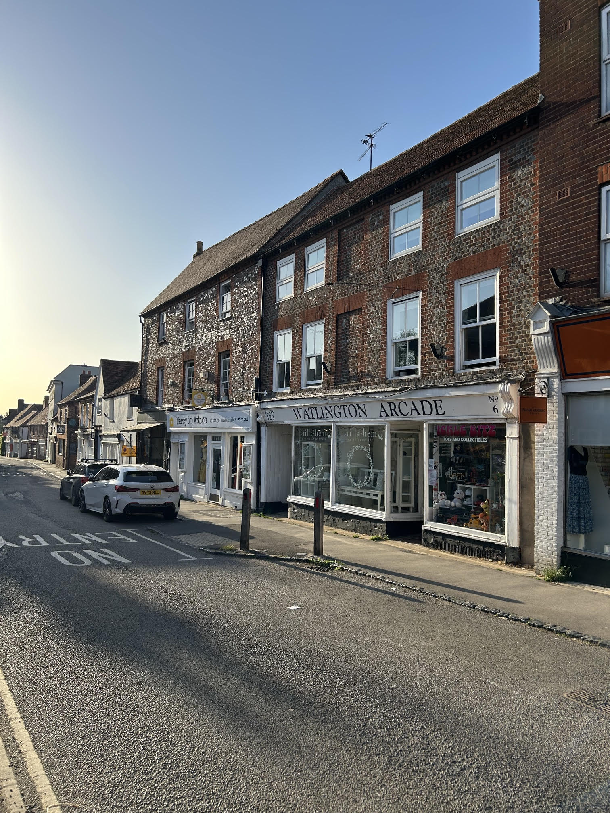
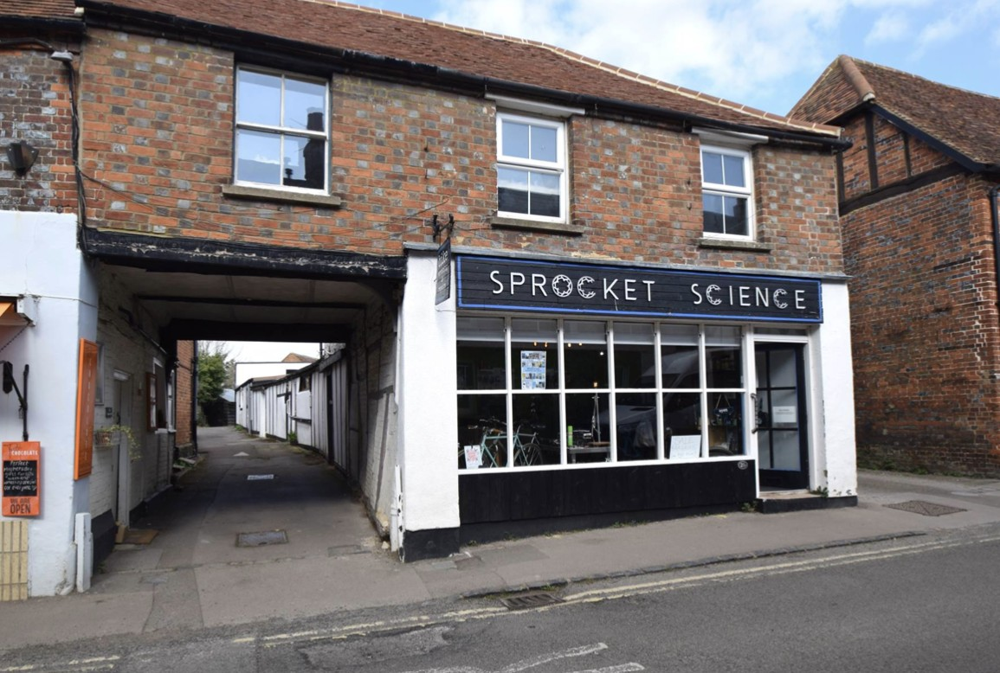
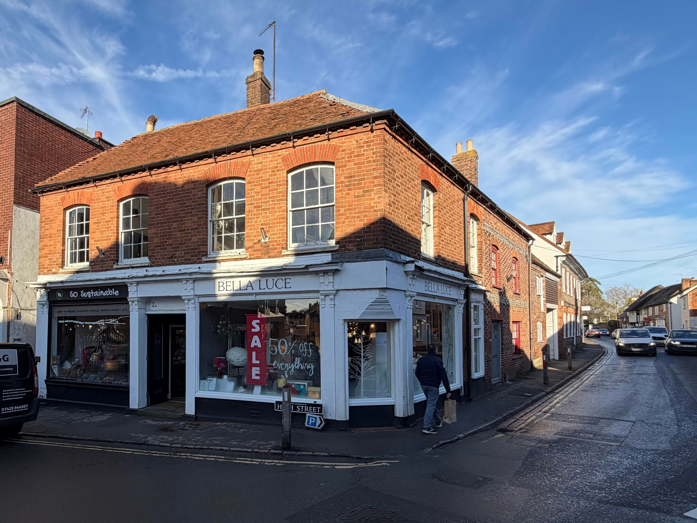
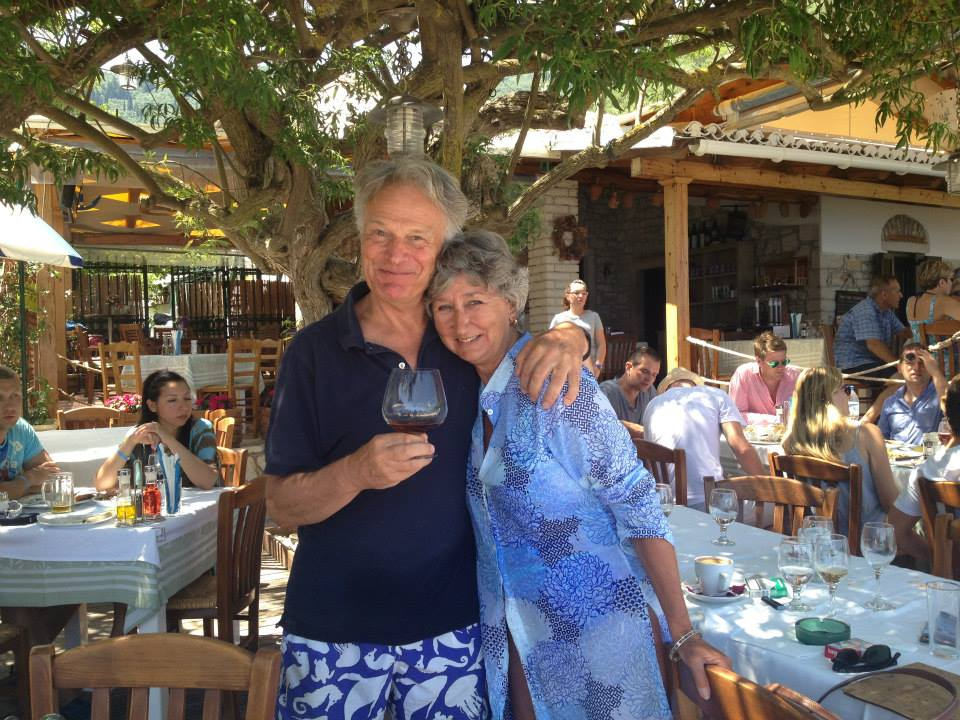
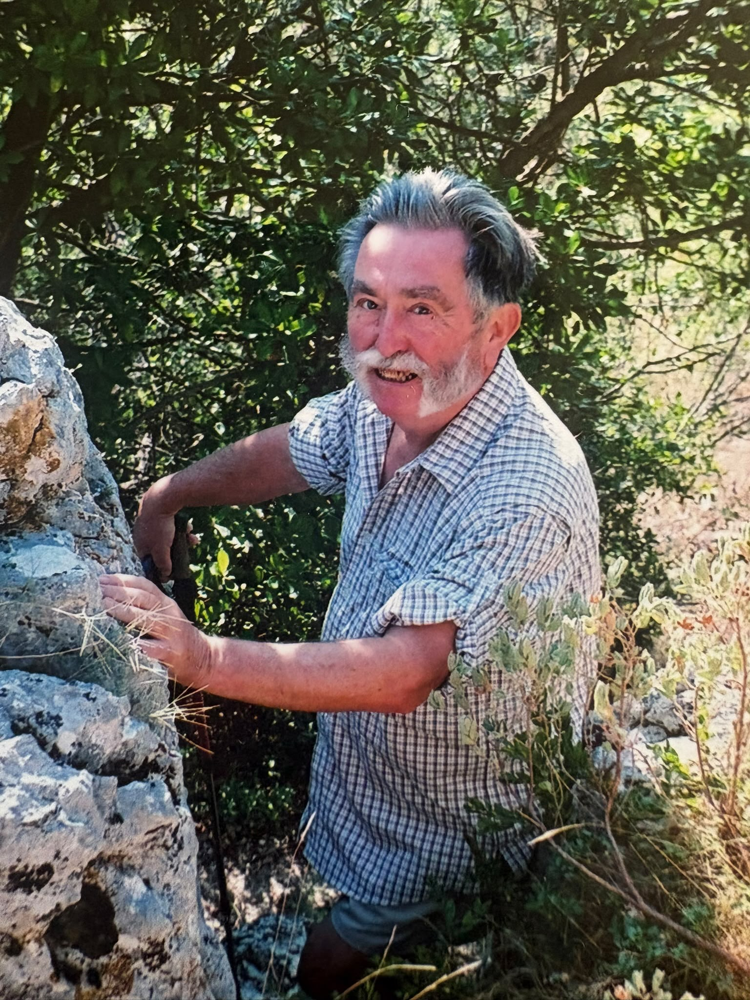
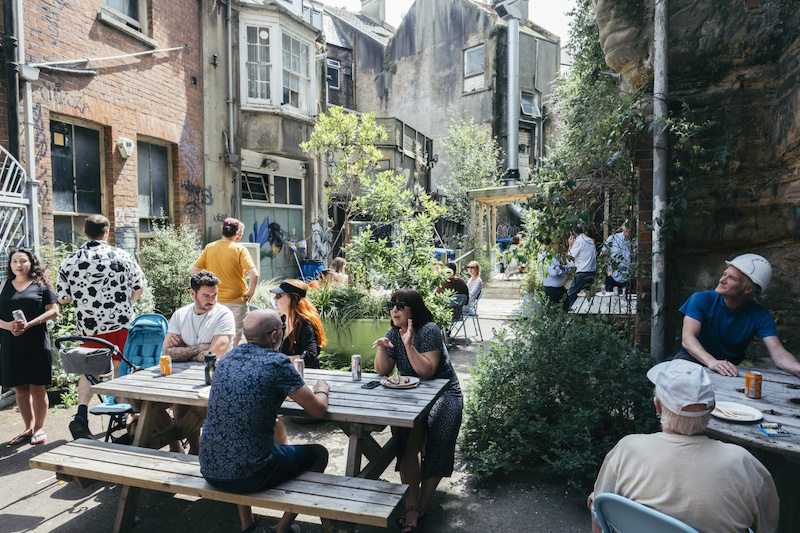
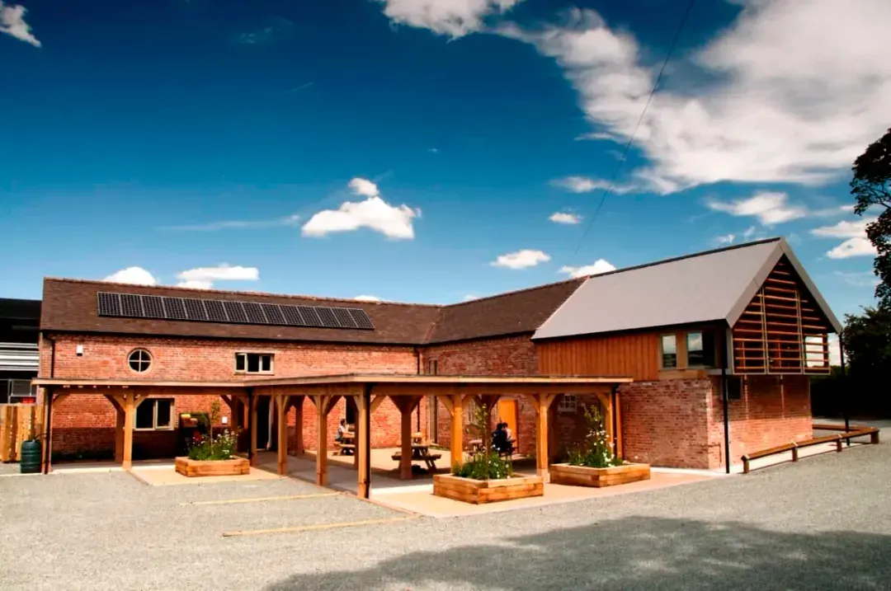
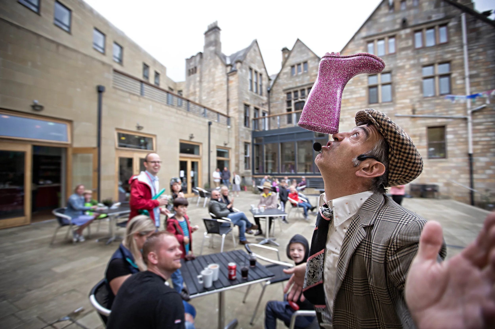

Not owned by a distant landlord. Not vulnerable to speculation. Held in community ownership, building by building, for everyone who lives here, now and for generations to come.
About WCP
Watlington has something most market towns have lost: a High Street that is wholly integrated into our community. We have a varied mixture of independent businesses, food and drink, clothing and home, wellness and beauty, that complement each other and are part of the rich fabric of this town. But the buildings they occupy are vulnerable. When freeholds change hands, landlords understandably want to maximise their yield. This may lead to rent increases or tenants that do not dovetail with existing businesses.
Watlington Community Property exists to change that. We are a Community Benefit Society, a legal structure that allows communities to own assets collectively, governed by their members, and protected from being sold for private gain.
Our mission is to acquire commercial freeholds on Watlington High Street and hold them permanently in community ownership, letting them at fair rents to tenants who benefit the town. Brick by brick, shop by shop, let's own it.
See how it works"Not owned by distant investors. Not at the mercy of the market. Owned by the community, run for the community."
Once a property is in community ownership, a statutory asset lock means WCP's assets can never be used for private gain. If a property were ever sold, the proceeds would have to stay in community benefit.
Share offer progress
Community investment in WCP, including online and offline investments.
of £180,355 target
This total combines investments made through our Crowdfunder page with offline investments. It is updated manually, so the Crowdfunder page may show a more recent online figure. Community shares are at risk. Read the Share Offer Document before investing.
Invest now →Our purpose
We raise funds through a community share offer to buy the freehold of commercial buildings on the High Street outright.
A statutory asset lock in our registered Rules means WCP's assets can never be used for private profit. If a property were ever sold, the proceeds must stay in community benefit.
Rents fund running costs, debt servicing, and future acquisitions. Properties let to local independent businesses and enterprises that give Watlington its character.
Anyone can invest and become a member. Every member has one vote regardless of investment size. Democratic by design.
Acquisition targets
Our community share offer is now open to fund the acquisition of properties on Watlington High Street, starting with 6 High Street. Acquiring 26 High Street depends on a title split and a third-party purchase of the wider building.



The people behind the property

Photo coming2 High Street has been in the Carlisle family for decades. Mark Carlisle, a chartered surveyor, land agent, and one of the most respected property professionals in South Oxfordshire, understood instinctively what makes a high street work. He knew that independent businesses need landlords who take a long view: fair rents, continuity, and a genuine interest in the people on the other side of the lease.
Mark spent his career working with families, estates, and communities across the region, and brought that same sensibility to his own property. He and his wife Ming were landlords who supported their tenants and cared about what happened on Watlington's High Street. That approach made it possible for the businesses here to put down roots.
Mark died in November 2025. Ming continues to live in Watlington. In working to bring 2 High Street, and properties like it, into community ownership, we hope to honour what they stood for as landlords, and to make permanent the kind of stewardship they practised for so long.

Photo comingGeorge Bruce was a Watlington original. Born in 1937, he arrived in the town in 1960 as an art teacher and never left. Over more than six decades he wove himself into the fabric of the place, setting up the Allotment Association, transforming the Memorial Club, serving as Bowls Chairman for eleven years, and teaching ceramics before retiring to his first love: making things from wood.
George died recently, and his family have chosen to honour his memory by raising funds for WCP through the sale of his artwork. Details of the collection and how to support it will be published here when confirmed.
George's story in his own words is told in the Watlington Folk portrait project, a fitting place to begin.
Make a gift in memory
Donating to WCP in memory of someone you have lost is a meaningful way to honour their connection to Watlington and its community. A donation in someone's memory helps secure the High Street for future generations, a lasting tribute to those who loved this town.
If you would like to discuss making a gift in memory, or to dedicate a donation to someone special, please get in touch.
Contact us →The journey
We are a Community Benefit Society registered with the Financial Conduct Authority (No. 9831). Here is where we are.
WCP has been established with founding members and is registered with the FCA as a Community Benefit Society (No. 9831), supported by Plunkett UK.
We identified our target properties on Watlington High Street and built a community of supporters who want to see the High Street protected.
Our regulated community share offer is now open. Invest now from £200 up to £20,000. Shares can be withdrawn after a minimum of five years at the Management Committee's discretion. Every investor becomes a member with an equal vote.
Using funds raised, we complete our first freehold purchase, placing it under permanent community ownership, protected by a statutory asset lock that no future decision can override.
Rental income and future share offers fund further acquisitions. Each property we bring into community ownership strengthens the next. Brick by brick, shop by shop, a high street that is genuinely ours.
Your stake
A statutory asset lock means WCP's assets can never be used for private gain, now or in future.
Community investment, not a donation. Withdrawable after a minimum of five years at the Management Committee's discretion. Withdrawals are never guaranteed.
Every shareholder has equal say regardless of investment size. Democratic by design.
Rents fund running costs, debt servicing, and future acquisitions. Built to compound over time.
The team
The people steering WCP, with deep roots in Watlington and the experience to make this happen.
Nearly 25 years leading mutual organisations, including as Chief Executive of the Building Societies Association. Director of Co-operatives UK and Trustee of Plunkett UK. Has lived in Pyrton for nearly 30 years.
Founder of SO Sustainable on the High Street and active Watlington Business Association member. Former parish councillor.
Retired partner from an international accountancy firm specialising in financial services. Since retiring has held numerous charitable trustee and school governor positions, building expertise in charity governance and compliance.
Landlord of the Spire & Spoke and Chair of Watlington Business Association.
Company director with a background in law and deep family roots in the Watlington area. One of the inheriting owners of 2 High Street. She has declared this interest and takes no part in WCP decisions on its acquisition.
Get involved
Every investment, conversation and share of our news strengthens the case for community ownership.
Our share offer is open. Invest from as little as £200 and become a member with a vote at our AGM.
Invest now →Support the campaign now with a donation. Not an investment, and no shares are issued. Donations help fund the costs of setting up and running WCP.
Donate now →Tell your neighbours and local networks. The more people who know, the stronger the case we can make.
Contact us →We welcome applications from people with skills in finance, law, property, or community development.
Get in touch →Support the campaign
Donations are separate from the share offer and do not buy shares. If you want to invest, invest on our Crowdfunder page. A donation goes directly to WCP to help fund the costs of setting up and running the society. You will not become a member and it is not refundable.
Donations through this link are limited to £100 each. For larger gifts, email secretary@watlingtoncpt.org.uk.
This is a donation, not an investment. No shares will be issued for donations. You will not become a member of WCP, and you will not receive a financial return. Donations are not refundable.
The share offer is separate. Our regulated community share offer is now open: you can invest from £200 and become a member with a vote. Invest on our Crowdfunder page.
Payments are processed securely by Go Get Paid, a service provided by BankiFi Technology Ltd and The Co-operative Bank. WCP receives your payment directly into its Co-operative Bank account. Your payment data is handled in accordance with Go Get Paid's privacy notice.
Stay in the loop
Leave your details and we'll keep you updated on our progress and community events.
Opens in a new tab. Updates about WCP only. No third parties. Unsubscribe any time.
It can be done
WCP is part of a growing movement of community ownership across the UK. These organisations show what is possible.

Photo comingSince 2014, Hastings Commons has brought over 8,500 square metres of previously derelict floor space into community ownership across a cluster of buildings in the town centre, providing affordable workspaces, homes, and social spaces in perpetuity.
Visit hastingscommons.com →A community benefit society formed by local people to shape the regeneration of Somerleyton Road in Brixton. Over 1,200 members have joined to ensure the community has a lasting stake in the future of their neighbourhood.
Search Brixton Green →
Photo comingOne of England's first community land ownership projects. In 2006, over 8,000 shareholders came together to buy Fordhall Organic Farm, saving it from industrial development and placing it in community hands permanently.
Visit fordhallfarm.com →
Photo comingIn 2010, the community acquired the Grade II listed Victorian Town Hall from Calderdale Council on a 125-year lease. The association raised £3.7m to transform it into a thriving centre for community and creative enterprise, entirely self-funded through trading.
Visit hebdenbridgetownhall.org.uk →Common questions
Watlington Community Property Limited (WCP) is a Community Benefit Society, a type of democratically owned, regulated organisation, set up to acquire and permanently community-own commercial property on Watlington High Street. We are actively pursuing two properties: 6 High Street (Watlington Arcade), where our offer has been accepted, and the ground-floor retail unit at 26 High Street.
The goal is straightforward: take the buildings that house the independent businesses at the heart of this town out of speculative private ownership and put them into community hands, forever.
A Community Benefit Society (CBS) is a legal structure regulated by the Financial Conduct Authority, established under the Co-operative and Community Benefit Societies Act 2014. It is specifically designed for enterprises run for the benefit of the wider community rather than for profit.
Key features: every member has one vote, regardless of how much they have invested. Profits must be reinvested in the community purpose. A statutory asset lock means the assets cannot be sold for private gain, ever. It is a structure used across the UK to save pubs, shops, and community spaces.
When a private landlord owns a High Street building, the community has no say in what happens to it, who rents it, at what price, or whether it is left vacant. When the community owns the freehold, the community decides.
Our tagline describes the long-term ambition: a High Street where the buildings are owned by the people who live and work here, managed for viability rather than maximum return, and protected from speculative ownership in perpetuity.
6 High Street (Watlington Arcade) is our current priority acquisition. It is a historic commercial arcade of four independent retail units, with three long-leased residential flats above. Our offer has been accepted and we are progressing with solicitors. WCP would buy the freehold; the flats remain on their existing long leases.
At 26 High Street, WCP is seeking to acquire the ground-floor retail unit only.
2 High Street is not currently available. We remain committed to acquiring it in the long term should it return to the market.
WCP will let to local independent businesses on commercial terms. Our community benefit purpose, preserving commercial premises for independent businesses and preventing speculative use, means we actively apply criteria when selecting tenants. We will not let to national multiples, and certain other business types will not be considered appropriate. Full details of our tenant selection criteria will be set out in WCP's Lettings Policy, which will be put to a vote of WCP's members and published here once approved.
For 6 High Street, commercial leases will be agreed on open-market terms following acquisition.
An independent valuation of 6 High Street has been completed. An independent RICS valuation will be obtained for each further property before any offer is made. We will not offer above the independently assessed market value. We will not be bidding speculatively.
It is possible another buyer emerges, which is exactly why pace matters. The more people who register support now, the stronger the case we can make and the more quickly we can move when ready.
Yes. Tenants and business operators can be members and investors on exactly the same terms as anyone else. The same governance rules apply to everyone: one vote, same rights, same information. There is no preferential treatment for tenants in relation to membership or investment.
If the individual were also on the Management Committee, any decisions affecting their tenancy would be handled under the Conflict of Interest Policy, the individual would declare their interest and step out of those discussions and votes.
The same way most well-run organisations do: you separate ownership from management. Members own the society and elect a Management Committee, a small group of between 3 and 12 people, to run its day-to-day affairs. The Committee makes operational decisions; members vote on significant matters (rule changes, major transactions, winding up) at Annual and Special Members' Meetings.
This model has been used successfully across the UK to run pubs, shops, farms, and community buildings. Democratic ownership does not mean everyone votes on every invoice, it means the community the society is supposed to benefit has real control over the organisation that serves them.
No special treatment. Founding members hold the same shares and have the same single vote as any other member. They serve on the Management Committee subject to exactly the same rules as anyone else, including term limits, the code of conduct, and removal procedures.
Any Management Committee member can be removed by a simple majority of members at a Special Members' Meeting. That is a deliberate safeguard written into the registered rules, not a courtesy. WCP is designed to outlast its founders.
Yes, and they are fully declared. Three founding members have declared interests. Two relate to 2 High Street, which WCP is not currently pursuing, so those interests are not engaged. The third is John Riddell, who owns 12 High Street, a residential property. All are recorded on the Register of Interests, and any member with an interest withdraws from discussion and votes on the property concerned under the Conflict of Interest Policy.
Our Chair, Robin Fieth, is a trustee of Plunkett UK, which supports WCP. This is also declared. These arrangements are not unusual in community benefit societies; what matters is that they are visible and managed.
The share offer is open. Invest on our Crowdfunder page, accepting debit and credit cards, Apple Pay, Google Pay, and bank transfer. If you prefer not to invest online, email secretary@watlingtoncpt.org.uk to request a paper application form.
Full details of how to invest are in the Share Offer Document. Please read it before investing.
The minimum investment is £200 and the maximum is £20,000. If you have a question about a specific amount, contact us at secretary@watlingtoncpt.org.uk.
Yes. A corporate body can be a member, with a named individual designated as its representative on the share register. Please get in touch before investing to discuss corporate membership.
You can purchase shares with the intention of gifting them, provided both you and the recipient are 16 or over. The recipient must complete their own membership application and consent to WCP membership before shares are formally issued in their name.
No. Community shares are withdrawable but not transferable, you cannot sell them to another person. This is fundamental to the model: it prevents a secondary market developing and keeps the ownership genuinely community-based rather than investment-driven.
Your community shares form part of your estate. If you have nominated someone to receive them, the Society will transfer or pay the value of your shares to that person on proof of your death. If you have not made a nomination, your personal representative may deal with your shares as part of your estate in the usual way.
Community shares are long-term capital. Shares can only be withdrawn after a minimum holding period of five years, and withdrawals after that period are at the absolute discretion of the Management Committee, they are never guaranteed.
Full details of the withdrawal process and any conditions are in the Share Offer Document. Do not invest money you may need in the short or medium term.
WCP may pay a modest rate of interest on shares, subject to financial performance and the Management Committee's assessment of affordability. Interest is targeted from Year 5. Interest is never guaranteed. Full details of any interest rate, timing, and conditions are in the Share Offer Document.
Beyond any interest, members do not receive a financial return. Any surplus is reinvested in the society's community purpose, maintaining the property, building reserves, and funding future acquisitions. This is by design: WCP is a community benefit society, not an investment vehicle.
Community shares carry real risk. The value of your investment could go down as well as up. You should not invest more than you can afford to hold for the long term.
WCP's primary trade is the letting of commercial property, which is an excluded activity under EIS and SEIS legislation. Investments in this offer are therefore not eligible for EIS or SEIS tax relief. This is not unusual for property-holding community benefit societies.
Possibly, but only as a supplement to community share capital, not as its primary funding mechanism. The society's rules cap borrowing at 75% of the value of fixed assets, and WCP will not borrow to fund share withdrawals.
Full details of the funding structure, including the share offer targets, any loan arrangements, and the minimum raise required to proceed, will be published in the share offer document.
No. The share offer will have a hard minimum target: if it is not reached, the offer closes and all money is returned in full. WCP does not proceed with an acquisition it cannot substantially fund from community share capital. Debt, where used at all, supplements the raise, it does not replace it.
Full details of the funding structure, minimum target, and any loan arrangements will be published in the share offer document.
Expansion is the long-term ambition. WCP is designed as a growing community-owned estate, not a single-property vehicle. When a further acquisition opportunity arises, the Management Committee can pursue it through a new share offer, a loan from community finance institutions secured against the existing property, or a combination of both.
Each future acquisition would go through the same governance process, independent valuation, full disclosure to members, Management Committee approval. No acquisition can exceed the borrowing limits in the society's rules.
Two things protect against this. First, WCP is bound by its rules to obtain an independent RICS Red Book valuation before any acquisition and will not offer above the independently assessed market value, there is no mechanism to pay over the odds even if the Management Committee wanted to.
Second, the community share offer model means the price WCP can pay is determined by what the community is willing to invest, not by what any individual is willing to pay speculatively. If a seller wants more than the market value, WCP simply does not buy.
We do not have a definitive figure. The High Street comprises many different freeholds and leaseholds in different ownership, and no comprehensive valuation has been published. Secondary commercial property in South Oxfordshire market towns typically yields 6–9% on purchase price, which gives a rough basis for individual property estimates.
WCP's ambition is long-term and incremental. We are starting with one building. The broader picture is about demonstrating the model works here, then expanding when the community has the appetite and the capital to do so.
The share offer has a hard minimum target. If that target is not reached by the closing date, the offer closes without proceeding to acquisition and all share capital is returned to investors in full. Investors bear none of the cost of an unsuccessful offer.
Full details of the minimum target, refund process, and timeline are in the Share Offer Document.
If the offer has closed and funds have been transferred to WCP but the acquisition cannot proceed, for example if the title to 26 High Street cannot be split or the vendor withdraws, share capital would be returned to investors in full. Full details of the conditions and process for refunds in this scenario are set out in the Share Offer Document.
In a solvent winding up, after all debts and liabilities are paid, paid-up share capital is returned to members before any remaining assets are distributed. So yes, if the society has sufficient assets, share capital is repaid.
Any surplus after repayment of share capital transfers to another asset-locked organisation under the statutory asset lock. It cannot be distributed to members or founding committee members as a windfall. This cannot be changed by any vote of the membership, it is baked into the registered rules permanently.
If WCP becomes insolvent, share capital could be lost in whole or in part. Community shares are not covered by the Financial Services Compensation Scheme.
Media coverage
WCP has been covered by national and local media since May 2026. Select articles are linked below.
The Henley Standard reports on WCP's successful bid.
Read in Henley Standard → The Henley Post 30 October 2026The Henley Post reports that WCP's community offer for Watlington Arcade has been accepted.
Read in The Henley Post → Henley Standard 23 September 2026The Henley Standard reports that Watlington Parish Council is considering pledging funds to help buy property.
Read in Henley Standard → BBC News 25 July 2026BBC News covers WCP's campaign to bring three Watlington High Street properties into community ownership, with pledges reaching around half its £600,000 target.
Read on BBC News → Oxford Mail July 2026The Oxford Mail covers WCP's campaign to acquire three Watlington High Street properties through a community share offer.
Read in Oxford Mail → Daily Express July 2026National coverage in the Daily Express of WCP's £600,000 community share offer to bring three Watlington High Street properties into permanent community ownership.
Read in the Express → Henley Standard July 2026The Henley Standard reports on the ACV nomination refusal for 2 High Street and WCP's determination to press ahead with the acquisition regardless.
Read in Henley Standard → Henley Standard 18 June 2026Follow-up coverage as the project develops, including discussion of parish council investment in the community share offer.
Read in Henley Standard → Henley Standard 27 May 2026First coverage of WCP's formation and plans for 2 High Street, including interviews with the founding members.
Read in Henley Standard → Henley Standard 20 May 2026Early coverage following WCP's presentation to Watlington Parish Council, with chair Nicky Smallbone explaining the community ownership concept.
Read in Henley Standard →Chair Robin Fieth was interviewed live on BBC Radio Oxford on Monday 20 July, alongside James Alcock, Chief Executive of Plunkett UK. Three clips from the broadcast are available to listen to below.
You can also listen back to the full programme on BBC Sounds.
Transparency
WCP is committed to operating openly. Our public governance documents are available to download below.
The registered rules of Watlington Community Property Limited are held on the FCA Mutuals Public Register. Email secretary@watlingtoncpt.org.uk if you would like a copy.
View on FCA registerHow WCP identifies, declares and manages conflicts of interest within the Management Committee.
Download PDFThe process for raising and resolving complaints about WCP's conduct, decisions or management.
Download PDFSlides from the WCP public meeting held on 16 July 2026 at the Spire & Spoke, Watlington.
Download PDFThe standards of behaviour expected of all Management Committee members throughout their tenure.
Download PDFThe full terms of the WCP community share offer, including risks, rights of members and how shares are withdrawn.
Download PDFOur plan for acquiring and managing High Street properties for community benefit, with financial projections.
Download PDFSupported by
Reach Fund
via Social Investment Business
Oxfordshire County Council
Councillor Priority Fund
Watlington Parish Council
Setup grant